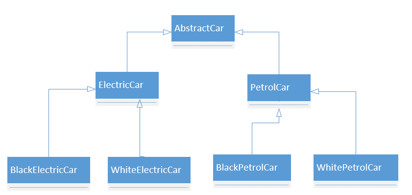
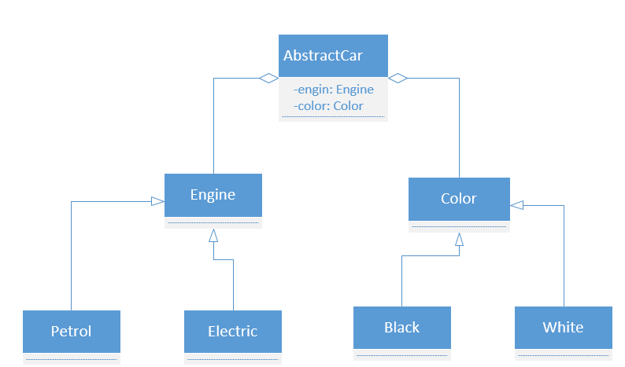

一、面向对象编程OOP基本原则
1.1 单一职责原则(SRP)
There should never be more than one reason for a class to change
- 单个类只负责一个职责，不同的职责要用不同的类分离开，这样有利于提高内聚，减少耦合。假设类C1负责两个职责R1和R2，这样两个职责的代码都耦合在C1中，当有一天需要更改职责P1,有可能会导致P2也跟着一起无形之中被修改掉，而如果改为由C1和C2分别负责P1和P2，这样修改P1时就不会对P2产生影响，修改代码影响面就降低很多。
- 此外职责如果不清晰，程序的扩展能力就会大大降低，当P1需要进行职责扩散的时候，比如扩散为P11和P12，这时如果所有的职责都耦合在一个类中就会使得改动起来很棘手。看下面这个例子：类Teacher可以进行教学和培训连两种行为，当把两个职责耦合在一起的时候，代码如下所示：
1
2
3
4
5
6
7
8
9
10
11
12class Teacher{
private String place;
public void teacheOrTraining(String type){
if(type.equals("教学")){
// 进行教学
place = "XXX"
}else if(type.equals("培训")){
// 进行培训
place = "YYY"
}
}
} - 此时Teacher类的teache和training耦合在一起，职责不清晰，并且还可能依赖相同的变量或方法，当修改其中一个职责时，如果思考不清晰，修改不得当，可能会对另外一个职责产生破坏性的影响。并且此时假如我们需要对teache职责进行扩散，分为更具体的中文教学和英文教学，代码就变成下面这样：
1
2
3
4
5
6
7
8
9
10
11
12
13
14
15
16
17class Teacher{
private String place;
public void teacheOrTraining(String type, String language){
if(type.equals("教学")){
if(language.equals("中文")){
// 进行中文教学
place = "XXX-1"
}else if(language.equals("英文")){
// 进行英文教学
place = "XXX-2"
}
}else if(type.equals("培训")){
// 进行培训
place = "YYY"
}
}
} - 可以看到，此时代码就变的分支特别多，如果裂变更为强烈，很难想象代码改如何维护，当你接手这样一份代码，并且让你去修改的时候，心里肯定有一万只草泥马奔腾而过。为了尽可能避免这种情形的出现，我们可以至少先按照方法级的职责分离去修改，什么叫方法级的呢，就是将原本耦合多个职责的单一方法按职责进行拆分，使每个方法负责单一的职责,代码如下：
1
2
3
4
5
6
7
8
9
10
11
12
13
14
15
16//方法级职责隔离
class Teacher{
private String place;
// 进行中文教学
public void teacheChinese(){
place = "XXX-1"
}
// 进行英文教学
public void teacheEnglish(){
place = "XXX-2"
}
//进行培训
public void training(){
place = "YYY"
}
} - 此时对单个功能的修改就会使修改的影响的面要缩小的得多，并且代码的结构也清晰不少，但是对于Teacher这个类来说，职责还是太多，假如某一天教育部规定，教学老师不能课后开培训，只有专业培训机构的老师才能培训，这个时候Teacher类就又要修改，所以我们还要做到单个类的单一职责，把Teacher类拆分为两个类：这样一来，类的责任清晰，高内聚低耦合，易于程序修改和扩展。单一职责原则强调一个类值应该有一个职责，不应该为了方便，为了一时的省事而把多个功能耦合在一起，职责的范围不清晰，交错杂糅就会使代码变的过于臃肿，维护成本增高，并且代码修改所影响的范围就会扩散。当然实践中也不能过多设计太多的类，过度的设计会使项目变的繁琐，可能导致一些简单的功能都需要太多类协作完成，因此如何把握和设计类的责任范围就显得尤其重要。
1
2
3
4
5
6
7
8
9
10
11
12
13
14
15
16
17
18class Teacher{
private String place;
// 进行中文教学
public void teacheChinese(){
place = "XXX-1"
}
// 进行英文教学
public void teacheEnglish(){
place = "XXX-2"
}
}
class Training{
//进行培训
public void training(){
place = "YYY"
}
}
1.2 接口隔离原则（ISP）
Clients should not be forced to depend upon interfaces that they don’t use
- 接口隔离原则强调一个类不应该被强迫去继承一个它不需要方法的接口，对于一些复杂的业务场景，应该避免设计大一统过于臃肿的胖接口，相反应该按照具体业务的场景进行接口的分门别类，利用委托和多继承来区分和定义接口之间的边界，自顶而下进行高层建筑设计，这样对于各个子模块或特性模块之间就能通过子接口降低耦合度，提升各个子模块内部的内聚性。
- 接口的设计一是需要深入具体的业务场景，二是需要更多的经验设计，在不清楚具体场景时，设计瘦接口相对于胖接口对后期扩展的可能性更大，因为在瘦接口上做加法比在胖接口上做减法要来的容易，在设计接口时，可参考以下原则
- 接口尽量小，但是要有限度。一个接口只服务于一个子模块或业务逻辑。
- 为依赖接口的类定制服务。只提供调用者需要的方法，屏蔽不需要的方法。
- 提高内聚，减少对外交互。使接口用最少的方法去完成最多的事情。
看下面这个例子，为了简化我们对三方数据源的调用，我们提供了大一统全面的数据源接口：
1 | public interface IDataSource { |
具体使用的时候，比如当我们保存数据到文件时，我们的SaveFileSource类只需要实现callFileSource()这个方法即可，但由于接口IDataSource提供很多方法，因此SaveFileSource需要实现它不需要的接口：
1 | public class SaveFileSource implements IDataSource{ |
如果有一个业务场景需要Http和RPC操作，就又会造成实现了其它三个不需要的空方法，这样各个业务模块之间就耦合在一起，当场景越来越多，越来越复杂是，再来更改IDataSource就会变得异常麻烦，因此在设计接口时就应该根据业务场景进行分类，使各个模块只继承它所需要的接口方法，这样就会不管是新增还是修改，影响的范围就会减少，比如如下设计：
1 | public interface IThirdPartyDataSource{ |
总结接口隔离原则具有以下优点：
- 将臃肿庞大的接口分解为多个粒度小的接口，可以预防外来变更的扩散，提高系统的灵活性和可维护性。
- 接口隔离提高了系统的内聚性，减少了对外交互，降低了系统的耦合性。
- 如果接口的粒度大小定义合理，能够保证系统的稳定性；但是，如果定义过小，则会造成接口数量过多，使设计复杂化；如果定义太大，灵活性降低，无法提供定制服务，给整体项目带来无法预料的风险。
- 使用多个专门的接口还能够体现对象的层次，因为可以通过接口的继承，实现对总接口的定义。
- 能减少项目工程中的代码冗余。过大的大接口里面通常放置许多不用的方法，当实现这个接口的时候，被迫设计冗余的代码。
1.3 依赖倒置原则（DIP）
High level modules should not depend upon low level modules. Both should depend upon abstractions. Abstractions should not depend upon details. Details should depend upon abstractions
依赖倒置原则强调我们应该面向抽象/接口编程，不要直接依赖于实现细节，因为细节变化的可能性是很大的，相对来说抽象更加稳定，如果高模块依赖于具体的细节，则当每次变更时，都需要修改代码，模块之间的耦合度就会变高，修改所带来的印象面也会变得不可控，看下面例子：
1 | class Student { |
Student类直接依赖具体的Bike类实现回家逻辑，当某一天学生自行车坏掉，需要搭公交车的时候，这是就要修改Student的代码：
1 | class Student { |
这是依赖细节的缺点就暴露出来，首先需要修改Student的代码，并且修改导致原先的骑自行车逻辑不可用，如果一开始就面向抽象编程，我们可以抽象出交通工具抽象类或接口，Student直接依赖于抽象，这样对抽象进行扩展时，高层模块不需要变动逻辑，并且很容易在旧的业务上扩展出新的业务逻辑，并且对旧的业务没有丝毫影响：
1 | abstract class AbstractVehicle{ |
1.4 迪米特原则（LKP）
Talk only to your immediate friends and not to strangers
迪米特原则又叫最少知道原则，强调一个对象应该与它直接关联或依赖的对象有通信联系，不应该与其他不关联的对象产生调用关系。遵循迪米特法则的设计会使类之间的耦合度降低，因为每个类只与自己的直接朋友关系类发生关联关系，通过使用中介者类尽量减少不同模块之间的耦合度，下面用一个具体的例子来理解该原则，例子来源David Bock的案例地址：
顾客在餐厅消费买单时，由服务员进行买单服务，当不遵守demete法则时，买单的代码如下所示：
1 | public class Custumer { |
其中Wallet类如下所示：
1 | public class Wallet { |
买单的代码如下图所示：
1 | public class Waiter { |
此时Waiter类直接耦合了不与它直接相关联的Wallet类，这样做会有什么问题呢？首先目前买单的逻辑表名，服务员直接把顾客的钱包拿过去，然后扣去了应付的费用，这在现实就是不合理的现象，因为钱包是个人物品，如果我们钱包里面将来还有可能会产生银行卡，身份证，驾驶证等等个人隐私信息，这样服务员相当于直接拥有我们钱包里的所有信息的使用权，这肯定是不行的。此外，当我们想要编译Waiter类的时候，需要同时编译Custumer和Wallet这两个类，它们耦合在一起，将来当我们修改Wallet的时候，可能会导致Waiter内的功能发生故障。
合理的满足最少知道原则，首先我们要把Wallet从Waiter类中解耦出来，Wallet是属于个人的，只有消费者个人才拥有对Wallet的操作，修改后的代码如下：
1 | //顾客 |
这样设计的好处在哪呢？首先如果钱包类发生变化，或者顾客换了个新的钱包，或者顾客的钱包钱不够，从比人哪里抽够了钱交给服务员，此时服务员类都不需要修改。服务员只关心收钱有没有收够，而不在关心顾客的钱的来源，顾客钱包里面有什么东西，因此代码的可维护性就会提高，修改所产生影响的范围也会缩小，即代码的耦合性降低，内聚性提高。
具体使用迪米特法则时应该怎么做呢，一个对象的方法应该调用以下四种类型的其他方法：
- 自己的方法
- 作为参数传进来对象的方法
- 该对象所创建或持有的对象的方法
- 直接组合对象方法
一般当代吗中出现以下情形时，可能就违反了迪米特法则，我们应该在代码腐烂之前对其进行重构：
- 出现value = object.getX().getY().getTheValue();这样的调用
- 创建了很多临时变量 Wallet tempWallet = person.getWallet(); license = tempWallet.getDriversLicense();
- 导入了太多没有用到的类，比如 import java.awt.*;
1.5 开闭原则（OCP）
Software entities should be open for extension，but closed for modification
翻译过来就是就是代码对扩展开放，但是对修改关闭，为了实现这一点，抽象就显得尤为重要，首先我们来看一个反例：
1 | public class Shape { |
这个例子就为违反了开闭原则，因为当我们以后需要增加一个新的类型的图形时，我们需要修改DrawPanel类来实现，因此我们需要进一步抽象，使得将来发生变化是只需要增加代码而无需修改代码来实现，请看下面代码：
1 | public abstract class Shape { |
这样当我们需要新增一个图形类型的时候，只需要创建一个新类继承Shape即可，其他类的代码不需要改变,比如：
1 | public class Arc extends Shape { |
1.6 合成复用原则（CRP）
try to use synthesis / aggregation, try not to use inheritance
合成服用原则强调类之间的包含关系，在面对”has a”这种场景时，使用组合扁与类与类之间的解耦，并且程序的扩展性还可以提高，而对于继承，强调的这是”is a”的关系。
看下面例子：
1 | abstract class Car { |
类继承关系图如下：

我们可以看到使用车与颜色本身就不是”is a”关系，而应该是”has a”关系，当后面需要扩展增加颜色种类时，我们需要新增很多类。因此我们应该使用组合关系吧颜色和车的发动机类型给解耦组合起来，请看下面类图：

这样使用组合关系，就把类与类之间的耦合度降低，同时程序的扩展性也会大大提高。
1.7 里氏替换原则（LSP）
functions that use pointers or references to base classes must be able to use objects of derived classes without knowing it.
里氏替换原则主要强调以下两点：
- 对于所有使用基类的地方，也要可以使用其子类
- 子类可以扩展添加新的行为方法，但是尽量不要重写修改父类的方法
举例说明，矩形包含长方形和正方形，我们定义矩形的类如下:
1 | public class Rect { |
定义一个计算矩形面积的辅助类：
1 | public class AreaUtil{ |
定义正方形继承矩形：
1 | public class Square extends Rect { |
这个时候如果我们去计算正方形的面积，得到的结果就是错误的，因此合理的使用继承必须有明确的抽象含义，否则当替换为子类时，就有可能出现异常。